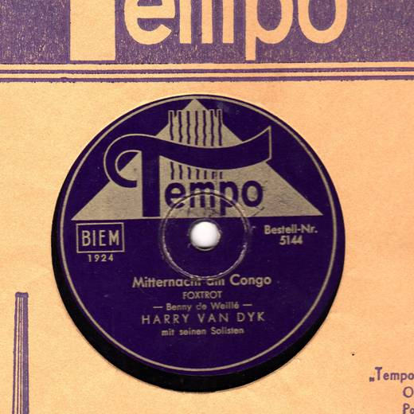

Ah, was ist das? Mal hin swingen:
Sexists, Swing Off – der besonders amüsante swingtanztee mit bier.
faq infoladen, jonasstrasse 40
http://as-laden.info/?p=2621
[via Matze]
Ah, was ist das? Mal hin swingen:
Sexists, Swing Off – der besonders amüsante swingtanztee mit bier.
faq infoladen, jonasstrasse 40
http://as-laden.info/?p=2621
[via Matze]

Im Tanzcafé wird’s winterlich – so wie draußen wahrscheinlich auch! Nun brauchen wir flotte Rhythmen um uns warm zu tanzen und die schönen Kleider auszuführen. Das Motto lautet diesmal „The Winter Dance Party“ – auch als kleine Hommage an die gleichnamige Konzerttour 1959 mit diversen Rock’n’Roll Sängern und – Bands, während der am 03. Februar Buddy Holly, Ritchie Valens und The Big Bopper bei einem Flugzeugabsturz ums Leben kamen.
Die Musik dieser Ära soll uns zum Tanzen und Träumen bringen – wie immer mit Kaffe und Kuchen und kleinem Überraschungsprogramm.
Sonntag, 05.02.2012
15 – 18 Uhr
Kino Union, Bölschestr. 69, 12587 Berlin-Friedrichshagen
Eintritt: 6,00 EUR inkl. Kaffee und Kuchen
Der Max hat mal wieder ’n schicket Ding gemacht. Anhörn und Spaß haben:
“ params=“show_artwork=true“ width=“100%“ height=“166″ iframe=“true“ /]
^^ btw. das da oben ist das neuste SoundCloud Widget – damit könnt ihr direkt hier und jetzt dem Max Kommentare hinterlassen. Also ran an die Tasten!

Endlich wieder tanzen im Alten Ballsaal (Bräustübl)! Immer am letzten Freitag im Monat präsentieren Bands und DJs die unvergessliche Musik von den Goldenen Zwanzigern bis zu den Swinging Sixties. Lauschen und tanzen Sie zu Swing, Boogie, Rock’n’Roll und Twist. Üben Sie sich im Paartanz oder hotten Sie partnerlos über die Tanzfläche die schon alles gesehen hat. Kleiden Sie sich stilgerecht oder kommen Sie ganz leger – erlaubt ist, worin Sie sich wohlfühlen.
Zur Premiere spielt das Quartett Helena & the Twilighters Musik für Lindy, Shag, Balboa, Foxtrott, Jive und DJ Capt’n Kuddlemuddle legt dazu noch Rock’n’Roll und Boogie auf.
Essen, tanzen, zuschauen – fühlen Sie sich willkommen im wiederbelebten Alten Baalsaal!
Freitag, 27.01.2012
Einlass: ab 19:00 Uhr
Ende: 0:00 Uhr
Eintritt: 8,00 EUR
Alter Ballsaal im Bräustübl, Müggelseedamm 164, 12587 Berlin-Friedrichshagen
„Swingjunged let’s dance“ im MANDALAY, Neuer Pferdemarkt 13, 20359 Hamburg ab 20Uhr / 20:30Uhr Crash Kurs mit der SwingWerkstatt und bis 22Uhr Happy Hour
Meine lieben Freunde der Swing-Musik, an alle die Lindy Hop, Balboa oder Charleston für sich entdeckt haben!!
Am kommenden Mittwoch, 25.01.12 kommt wieder der NDR ins Haus und dreht für die Sendung „Rund um den Michel“, einen Bericht über die Swing Jugend in HH, das Mandalay und mich.Ich würde mich sehr freuen wenn wir das MANDALAY mit vielen Tänzern präsentieren würden, ob Anfänger, Fortgeschrittene oder Profis ist egal. Hauptsache man hat Spaß an der Musik und der Swinggemeinde HH. Ich bin sehr glücklich darüber, dass sich mittlerweile so viele Menschen für das Tanzen, die Musik und den Stil der 30er-50er Jahre begeistern lassen….
Also, kommt vorbei, haut einen auf der Tanzfläche raus und zeigt dem NDR was geht in HH.
P.S.:
Ich habe letztens erfahren, dass Hamburg mittlerweile die Stadt für Swing-Parties und Tanzen ist!!!
Ich finde da haben viel Menschen zu beigetragen z.B. (Tanzschulen, Tanzlehrer, Veranstalter die nette Parties aus eigener Hand erschaffen haben und natürlich die ganzen Tänzer)LG euer DJ Swingy the Kid
via Swingy the Kid
Da kommt was im Kino: The Artist. Die 20er: Liebe, Drama, Eifersucht – alles stilecht in Stumm und Schwarz-Weiss – da darf auch der Swing nicht fehlen. Anschauen!
http://www.imdb.com/title/tt1655442/
Die Havel Hoppt – und das solltet Ihr euch nicht verpassen lassen:
In diesem Jahr freuen wir uns auf den vierten HavelHop. Der HavelHop 2012 findet am Himmelfahrtswochenende (17. – 20. Mai) in Potsdam in der Nähe von Berlin statt . Es wird wieder ein tolles Rahmenprogramm geben mit unserer wundervollen Swingin‘ City Tour am Freitag Nachmittag und vier fantastischen Partys. Außerdem gibt es natürlich wieder unsere gemütliche Workshopatmosphäre mit Unterricht am Samstag und Sonntag. Folgende Lehrer sind bisher dabei: Hasse und Marie aus Schweden, Juan und Sharon aus Argentinien/Australien und Angela Andrews aus Großbritannien. Drei weitere Lehrer werden noch ganz bald dazu kommen 😉
Freut euch auf:
– Vier Partys von Donnerstag bis Sonntag, Freitag und Samstag mit Livemusik
– Acht Stunden Lindy-Hop-Unterricht mit unseren tollen internationalen Lehrern
– Samstag und Sonntag Taster Classes
– groovige Stadtführung: tanzen auf den Straßen von Potsdam zu Livemusik
– Alle Partys und den Unterricht auf demselben Gelände, gemütliche Atmosphäre in Tracks mit nicht mehr als 20 Paaren und tolle, grüne Umgebung direkt am Havelufer
– Reichhaltiges Frühstücksbuffet und Mittagessen, sowie freie Unterbringung im Studiohaus
Die Registration ist ab jetzt eröffnet unter:
http://www.havelhop.com

Am 25. und 26. Februar findet in Hamburg der erste Wochenend-Bluestanzworkshop überhaupt statt. Trainer sind PHILIPPA SVENSSON, CHRIS HÄRM, LOUISE TANGERMANN und JERED MORIN.
Weitere Infos findet Ihr unter:
http://www.hansehop.de/get_blue.html
Und Blues tanzen, das kann so gehen … http://www.youtube.com/watch?v=oAbV8nXY8HI
Immer wieder Donnerstags bietet Jan Forward im TapBeat einen Lindy Hop/Swing Dance Kurs an. Gemischte Levels, jeder ist Willkommen, ob Anfänger oder mit Vorkenntnissen. Am Ende der Stunde kann man üben und tanzen:
Lindy Hop/Swing Dance mit Jan Forward
Donnerstags, 19:30-21:00 Uhr
Probestunde kostenlos.
Bei TapBeat, Internationales Steptanz Zentrum – Dieffenbachstr. 33, 3. Hof (F)
http://www.tapbeat.de

Ein Vortrag mit HOT-KOFFER von DJ Wuthe am „Grammophon“:
Bigband im Arrangement oder kleine Combo in freier Improvisation? Beides hat seine Berechtigung, wie weit ging die Freiheit des Improvisierens in Deutschland, besonders in den 40er Jahren während des Zweiten Weltkriegs und danach?
Freddie Brocksieper, Tullio Mobiglia, Teddy Kleindin, Benny de Weille, Helmut Zacharias, Mag Tevelian, Albert Vossen, Kurt Hohenberger, Harry van Dyk…
Eine musikalische Plauderei um Verständnis und Mißverständnisse mit viel Musik auf kleinstem Platz, daher:
Bitte reservieren: (030) 666 20 6 20
(Reservierung erbeten, da begrenzte Platzmöglichkeit)
am Sonnabend, dem 21. 01. 2011, Einlaß ab 16.30 Uhr
im Café ANTIKFLAIR, Schöneberg
Grunewaldstraße 10, U7 Eisenacher Straße / Kleistpark
Eintritt 5,- €
[via SwingTime Newsletter]
www.swingtime.de
Wow, dat klingt doch mal nach’n interessanten Workshop.
http://lets-misbehave-berlin.de/
Am Freitag ist es wieder soweit: Der Electro Swing Club Berlin startet ins 2012:
Pünktlich zum neuen Jahr ist der ESC Berlin im Festsaal Kreuzberg wieder zurück. Die Haarbänder und Hosenträger ruhten jetzt eine Weile eher trostlos in der Ecke. Damit ist nun Schluss: Zwirbelt die Bärte und rüscht eure Röcke, der Electro Swing Club beschießt eure Neruonen wieder mit einer grandiosen Mischung aus melodischem Swing und stampfenden Elektro. Der Festsaal wurde dafür wieder mit Liebe und Glitzer in die Atmosphäre der Goldenen Zwanziger getaucht. Die Goldstaubmusen treiben ihr Unwesen und verwandeln die tanzende Meute in glitzernde Nachtfalter.
Den Kinderschuhen entwachsen, bringen wir eure Abende im zweiten Jahr dekadent, schillernd und charmant auf den Höhepunkt. Neben famosen Live-Acts erwarten euch künstlerische Performances und kleine und große Zaubereien. Und inmitten dessen immer wieder der besondere Zauber der Zwanziger Jahre.
Musikalisch wird das Spektakel begleitet von:
– Danube’s Banks *live* (Gyspy Swing Band / Hamburg)
– Geschwister Schumann *live* (symbiont-music)
– Egokind (Kallias)
– Tobi Soundnomaden (Münster)
– Christopher Rose (Salon Obskur/Schellack-DJ)
– Bastian Kurzweil (dienstagswelt / Kallias)
Mehr hier:
https://www.facebook.com/events/286246498088786/
Hier ein schicket Interview mit Louise Gold:
http://www.hilker-berlin.de/de/leute/louise-gold
… und schon mal vormerken: Louise Gold und die Herren Querz swingen am Freitag (20.1.) im Dusty Ballroom @Kaffee Burger
Schöner kleiner Vortrag über Lindy Hop und dessen ‚Folgen‘ von Martynas and Egle aus Vilnius.
Übrigens: das ist ein TedX Vortrag – falls ihr diese Reihe noch nicht kennt, dann schliesst euch min. einen Monat ein und geniesst: http://www.ted.com
[via. swingdaily]